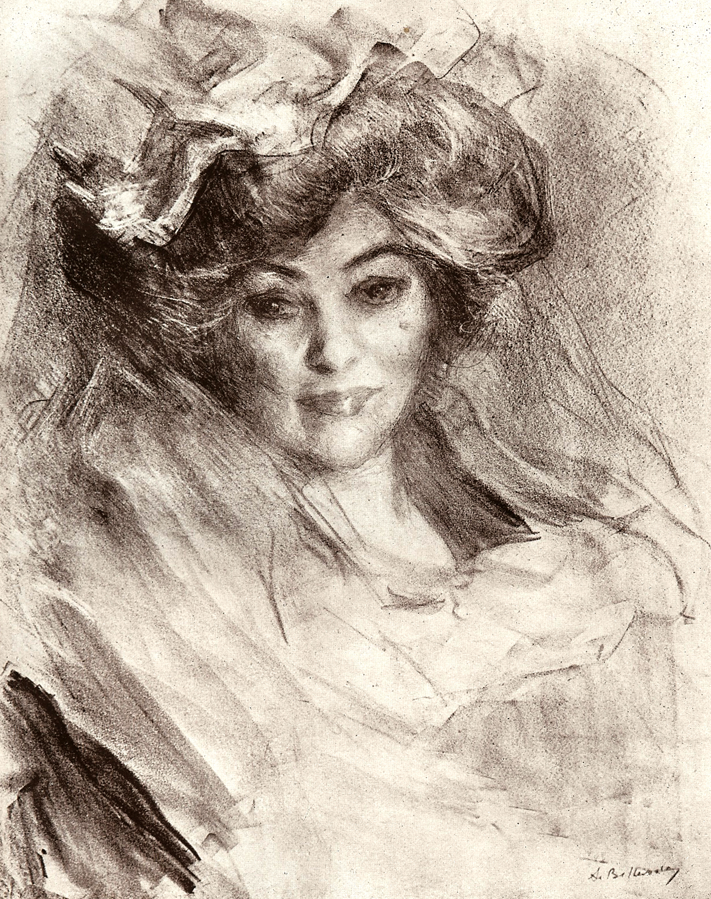
AdB-001The Artist's MotherAlbert de BellerocheDemonstration record→Provenance not establishedEnquire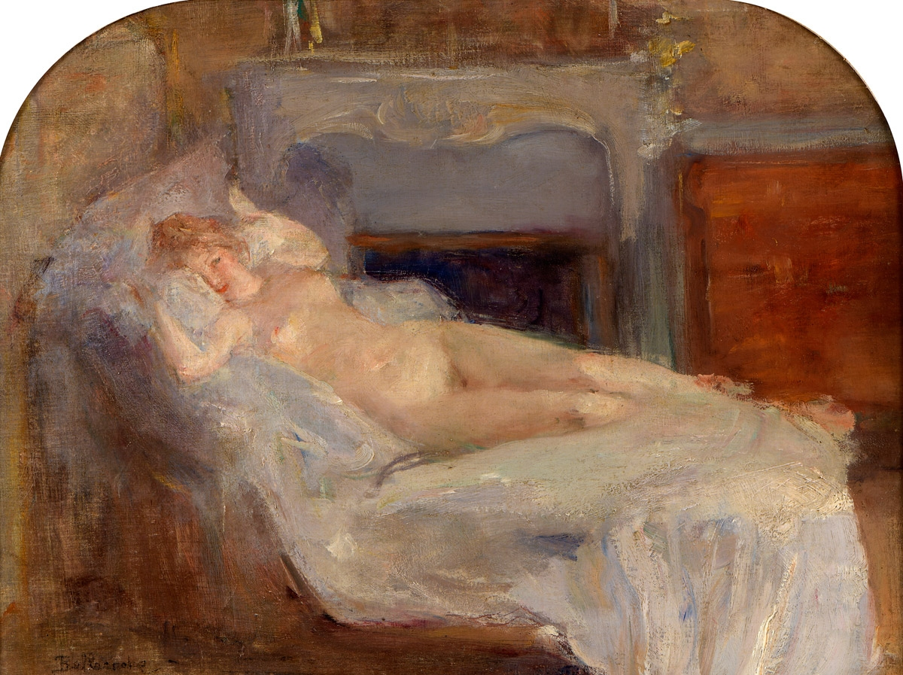
AdB-002Ruhender FrauenaktAlbert de BellerocheDemonstration record→Provenance not establishedEnquire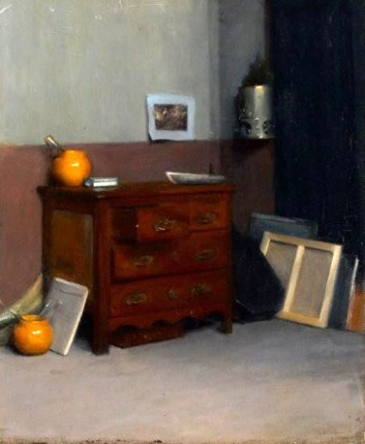
AdB-003Deux pots jaunesAlbert de BellerocheDemonstration record→Provenance not establishedEnquire- AdB-004La DanseuseAlbert de BellerocheDemonstration record→Provenance not establishedEnquire
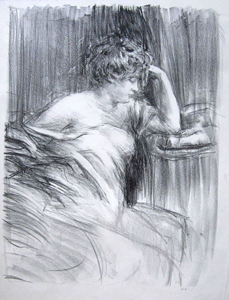
AdB-005La MéditationAlbert de BellerocheDemonstration record→Provenance not establishedEnquire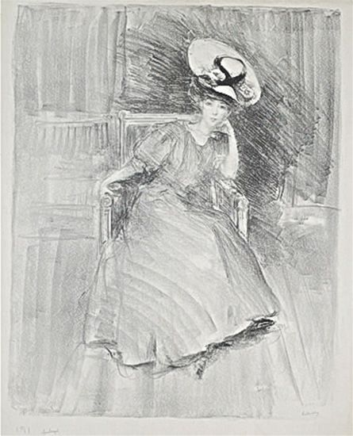
AdB-006Madame LéonardiAlbert de BellerocheDemonstration record→Provenance not establishedEnquire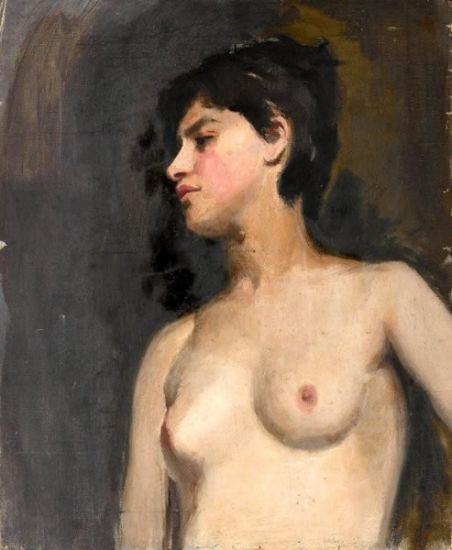
AdB-007BusteAlbert de BellerocheDemonstration record→Provenance not establishedEnquire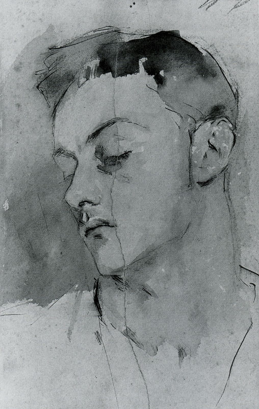
JSS-001Albert de BellerocheJohn Singer SargentDemonstration record→Provenance not establishedNot for salenot for sale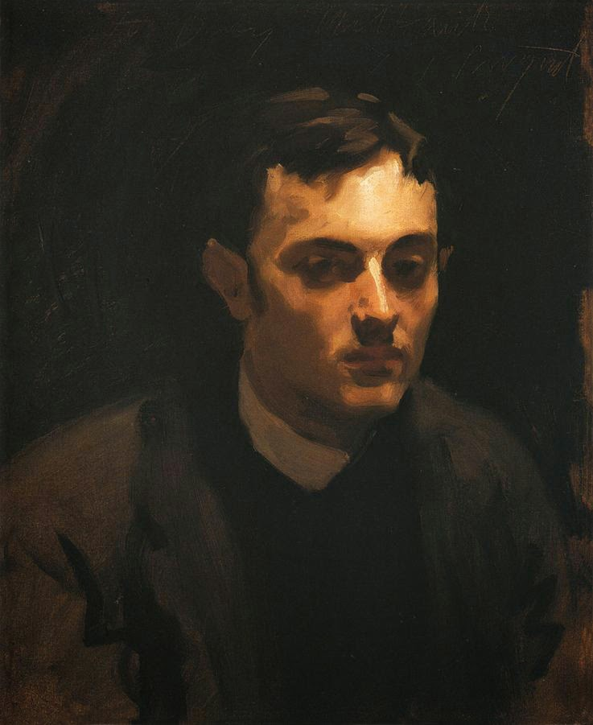
JSS-002Albert de Belleroche, half portraitJohn Singer SargentDemonstration record→Provenance not establishedNot for salenot for sale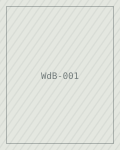
WdB-001CrabeWilliam de BellerocheThe artist→Gordon 'Andy' Anderson→by descentEnquire- WdB-002Scallop and whelk on a blue clothWilliam de BellerocheThe artist→Gordon 'Andy' Anderson→by descentEnquire
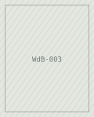
WdB-003Portrait of Gordon AndersonWilliam de BellerocheThe artist→Gordon 'Andy' Anderson→by descentNot for salenot for sale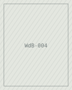
WdB-004Portrait of Augustus JohnWilliam de BellerocheThe artist→Gordon 'Andy' Anderson→by descentEnquire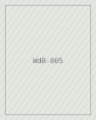
WdB-005Study of a lobsterWilliam de BellerocheThe artist→Gordon 'Andy' Anderson→by descent£380- FB-001Study for the Stations of the CrossFrank BrangwynThe artist→William de Belleroche→Gordon 'Andy' Anderson→by descentEnquire
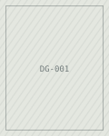
DG-001Portrait of Gordon AndersonDuncan GrantThe artist→Gordon 'Andy' Anderson→by descentNot for salenot for sale